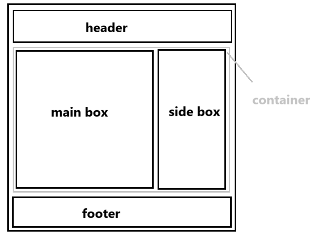

【html】网页设计笔记（html+css+javaScript基础）
一些基本定义
1、万维网
（world wide web ===> www）作用：实现资源共享
是Internet上基于客户/服务器体系结构的分布式多平台的超文本超媒体信息服务系统，它是Internet最主要的信息服务，允许用户在一台计算机上通过Internet读取另一台计算机上的信息。
2、网页
（web page）
是存放在web服务器上供客户端用户浏览的文件，可以在Internet上传输。网页是按照网页文档规范编写的一个或多个文件，这种格式的文件由超文本标记语言创建，能将文字、图片、声音等各种多媒体文件组合在一起，这些文件被保存在特定计算机的特定目录中。
3、网站
（web site）
也称站点，定义为已注册的域名、主页或web服务器。
“网站 = 域名（网站地址）+ 网站空间”
网站是一系列网页的组合，这些网站拥有相同或者相似的属性，并通过各种链接相关联。
浏览器 ——> 地址栏 ——> 网站地址 ——>网络服务器 ——> 默认网页（首页/主页）
4、web标准
不是某一种标准，而是一系列标准的集合。
“网页组成 = 结构 + 行为 + 表现”
对应三类标准：
1、结构化标准语言：XHMTL、XML、【HTML: 超文本标记语言HyperText Markup Lauguage】
2、表现标准语言：CSS【Cascading Style Sheets 层叠样式表】
3、行为标准语言：对象模型W3C DOM 【Document Object Model 文档对象模型】、ECMAScript【API应用接口：连接“网站文件”与“js”的接口】
5、Inter网
由双绞线通过物理连接构成网。（路由器、交换机）
6、http
超文本传输协议资源

7、URL
统一资源定位符
8、UML
统一建模语言
9、DNS
域名解析服务器
10、网页工作原理
1、静态网页（工作原理）

2、动态网页（工作原理）

11、Java Script
运行在客户端的一段程序。
12、架构
BS架构：浏览器/服务器
CS架构：客户端（下载APP）/服务器
13、网页图形图像处理工具
网页图形图像处理工具可以设计图像：
Fireworks （背景透明 jpg.不支持）
PhotoShop （背景透明 gif.动画 支持）
CorelDraw （背景透明 png.支持）
ps处理图像 -使用位图 文件尾缀.psd 1024×768：表示横纵向像数点（位图放大会失真、会模糊）
cd处理图像 - 使用矢量图算法记录图像的轮廓，内部颜色填充。文件尾缀 .cdr（随意放大，不会失真）
14、网页维护
1、上传网页：ftp文件传输协议
2、网站管理员：修改文件
3、服务器管理员：远程桌面
4、 网站风格布局：位置、疏密、颜色、装饰、线条、排版
15、网页设计流程
目标 -图片- 加工-优化
色彩：暖色（红橙黄）、冷色（青、蓝）、中色（紫、黑、白）
色彩搭配：单色搭配、类比色（相近色、近似色120°内）搭配、互补色[搭配/对比]、三元配色
用户体验：浏览、相交互、信任
颜色的属性：
色相：一个物体的颜色（H色相环）
明相：亮度B
纯色：相对于白色的亮度S
三元色：发光体（红、绿、蓝）、反射光（红【品红】、黄、蓝【青绿】）
RGB色彩值：（#000000 黑、#666666 灰、 #FFFFFF 白）16进制、0~256、最大值为FF之间元素在此过渡
16、网页布局
“国”字型、“厂”字型、“框架”型、“封面”型（表格+框架+DIV+CSS）
HTML编译规范
1、标签
标签：告诉浏览器以下是什么内容。（“英文、半角”下输入，不能有空格）
|
|
2、属性
属性：告诉浏览器、以下内容如何显示
①不同的标签有不同的属性，标签可以有很多种属性。
②“属性”与“属性”之间由“空格”间隔。“属性”与“属性值”之间由“=”连接。
|
|
像<b> <strong> <i> <em>等与表现css标准有关的标签，
在软件改进中，或许可以生效，通常不再直接使用。
标签可以嵌套，但不允许交叉
显示文件后缀的方法：计算机 - 组织 - 查看 - 显示文件后缀。【直接改.txt 为 .html可以直接编译静态网页】
3、文档的基本结构
|
|
4、超链接标签（跳转页面）
|
|
点击的时候是图片（或者跳转链接是图片）：
|
|
阐述【URL相对/绝对 路径】
网络路径：http://www.baidu.com - 在线网络文档路径（优点：不占空间。缺点：保证网络通畅、别人正常维护可访问）
-
本地路径：绝对路径 - 有盘符、斜杠方向向右（C:\Users\……\xxxx.jpg）
-
相对路径 - 以编辑网页文件所在的文件夹位置为原点（../父级文件/父上一级）优点：加载快。缺点：位置不能随意更改）
5、书签标记
|
|
6、文字标签（排版）
①<br>强制换行符 ② 空格符 ③&转义字符 ④lt小于 ⑤qt大于 ⑥;结束
⑦<nobr>...</nobr>不换行，当窗口大小化时 ⑧<!-- 注释 -->单行注释标记
⑨<p align="left/center/right">……</p>段落 - 段前，段后均会有一排空行，独占一行显示
⑩<div>……</div>独占一行显示，没有空行
⑪<pre>……</pre>预先排版标记，按照你输入进行排版，没有便会自动识别为所有格式为一个空格
⑫<hr>单标记，插入一条水平线，独占一行显示 （属性：位置、颜色、粗细。width没有宽度）
⑬<h#>标题，h#1~6字体的大小，<h1>……</h1>一级标题
⑭<font>……</font>字体标题，属性：size字体大小，1~7逐渐变大，color=颜色，face = 字体
⑮ <sub>……</sub>下标标记
⑯<sup>……</sup>上标标记
7、图片标签
图片标签<img>跟属性
|
|
|
|
|
|
|
|
8、表格标签
表格标签<table>
|
|
<caption>显示表格的标题</caption>可以写在所有的<tr>之前或者之后，但不可以写在之间
background背景图片，<tr>表示单元格表头，默认会加粗、居中显示
属性：（●disc ○circle）
9、表单
表单：收集客户端信息发送给服务器的某个动态网页的目标程序，完成客户端与服务器之间的交互。
|
|
注：①一切内容都要在“表单之内”才能被提交 ②一个网页可以有多个表单 ③表单只是一个区域、内容需要加入表单元素 ④表单内的元素 一定要有名称 才能被提交
input输入框
|
|
文本域
|
|
选择栏
|
|
列表标签
|
|
注：html中是无法使用图片作为项目符号的！！
|
|
CSS部分
一、基本选择符
1、标签选择符（所有的读标签下都使用这个样式）【4】
|
|
2、class类选择符（自由定义）【2】
|
|
3、id选择符（能且只能使用一次）【1】
|
|
4、复合选择符【3】
①“交集”选择符（两个基本选择符、直接连接、且同时满足 ）
②“并集”选择符（两者择其一）
③“后代/包含”选择符（x y{ }，表示在x中的y标签，应用{ }中的样式内容）
5、标签默认样式【5】
<!important>二、 css层叠样式表
1、后缀.css层叠样式表（格式设定）
层叠：发生样式冲突时，系统以上面编号的优先级进行展示
继承：<div><p></p></div>继承父级的样式设定
将css文件单独拎出来，放置在html文件的同级根目录下，可以使用style引用该路径下的css使得多个html同时可以使用同一个css
css实现的4种形式
①行内样式表
|
|
②内部样式表
|
|
③链入外部样式表
|
|
④导入外部样式表
|
|
2、通用选择符* ：所有的网页元素都会被改变
3、属性选择符：【优先级高于标签选择符】
格式为：元素[属性] 或者 元素[属性 * = 属性值] ， 例：E[alt]{ css代码 }
如果我们用E代表元素、alt代表属性、val代表属性值。则下面：
E [alt] { } - 属性名选择符
E [alt = val] { } - 属性值选择符
E [alt ~ = val ] { } - 属性值选择符（其中一个匹配）
E [alt 1 = val ] { } - 属性值选择符（连字符匹配、空白匹配）
E [alt = val- ] { } - 属性值选择符（连字符匹配、空白匹配）
E [alt^ = val ] { } - 属性值子串选择符（前缀匹配）
E [alt$ = val ] { } - 属性值子串选择符（后缀匹配）
E [alt* = val ] { } - 属性值子串选择符（子字符串匹配）
4、伪类选择符
UI元素 - 表单元素 ：
hover：当鼠标移动到上面的时的状态
fous：当聚焦在上面时的状态
active：按下激活时的状态
link：未访问时的状态
锚点标签：
a : link { } 未访问的链接状态
a : visited { } 已访问的链接状态
a : hover { }鼠标悬停在链接上的状态
a : active { }被激活的链接状态
text-indent : 2em ; 文章首行缩进：2个字符
色彩RGB rgba函数（R G B A ）A为透明通道，也叫透明度 == filter : opacity(0.5) 透明滤镜
①HTML：
超文本标记语言【不是编程语言】，【超文本】比普通文本功能更高的文本文件，【标记语言】使用一组标签对内容进行描述的语言
②语法规范：
A、后缀为 -.html 或 -.htm
B、头文件 + 体文件（head + body）
C、开头标签 + 结束标签
D、不区分大小写，常用小写
③JavaScript语法规范
变量（字母、数字、下划线）区分大小写，toSum：以小驼峰来进行命名，尽量避免使用a，b，c这种单字母命名。
三、CSS盒模型
针对块级元素

{padding：__ } 一个值：上下左右
{padding：__ __ } 两个值：上下/左右
{padding：__ __ __ __ } 四个值：上/下/左/右
-
我们一般用类似于3px这样的长度单位来设定css盒模型某元素属性的长宽，由此这里对长度单位进行了梳理
长度单位有：
em - 首行缩进 - 相对长度单位
px - 像素 - 绝对长度单位
pt - 点 - 绝对长度单位
in - 英寸 - 绝对长度单位
cm - 厘米 - 绝对长度单位
css中的一些属性:
1、brackground-image:url(跟图片的位置)
2、【居中】margin: 0px auto 上下间距为0，左右平均分配
3、【两端对齐】text-align: justify
4、【首字下沉】first-letter
5、【设置行高】line-height：length| normal
6、【设置文本换行】word-warp：normal|break-word
7、【设置图像位置】background-position（百分比/长度）
长度：左上角顶点距离背景两边移动的长度
百分比：中心与中心重叠，占整体的百分比大小
边框属性：
1、所有边框宽度（border-width）：1+7同时使用、才有效果
- medium - 默认宽度
- thin - 小于默认宽度
- thick - 小于默认宽度
- length - 数字+单位标识符（长度值），不可为负值
（4个）上下左右 、 （2个）上下/左右 、（1个）四周、（3个）上/左右/下
2、上边框宽度（border-top）：border-width || border-style || border - color
3、右边框宽度（border-right）
4、左边框宽度（border-left）
5、下边框宽度（border-bottom）
6、边框颜色（border-color）： 6和7一起使用
7、边框样式（border - style）：是个复合属性
- none 无边框样式
- solid实线
- hidden 隐藏样式
- double 双线
- dotted 点虚线
- groove 三维凹槽
- inset 三维凹边
- outset三维凸边
- dashed 长矩线
- ridge 菱形边框
使用时+height + width 设定position：absolute
内边距
内边距padding，和内容在一层，且不允许为负数
- 上内边距padding-top
- 下内边距padding-bottom
- 左内边距padding-right
- 右内边距padding-right
外边距
外边距margin
length：数字+单位标识符（长度值/百分比）
- 上外边距margin-top
- 下外边距margin-bottom
- 左外边距margin- left
- 右外边距margin-right
定位方式
定位方式position
- width宽
- height高
- min-height最小高度
- static【默认】静态定位/无特殊定位
- relative 相对定位（左、右）表偏移量
- absolute 绝对定位（上、下、左、右）属性
- fixed 绝对定位（相对于浏览器窗口）-固定定位
- z-index浮动序列
可见性
可见性visibility
- inherit 继承上一个对父对象的可见性
- visible 对象可见
- collapse 隐藏表格的行列
- hidden 对象隐藏
水平叠加问题
span1\span2 :两个行级元素紧邻不重叠
垂直叠加问题
div1/div2 ：两个块级元素垂直相遇，会产生叠加，形成一个新的外边距，以大的为准
div1/div2：两个块级元素包含相遇，也会产生叠加，面积以大的为准
浮动清除浮动
浮动float
- none不浮动
- left向左浮动
- right向右浮动
清除浮动clear
- none允许浮动
- left清除左浮动
- right清除右浮动
- both两边均清除
div+css布局
常见的“三行两列”布局
文本控制
文本控制font
- font-family 字体名称类别
- font-size 字体尺寸||绝对尺寸||相对尺寸 12px正文文字大小
- font-weight 字体的粗细（bold粗体，normal默认400、number、lighter默认细、100~900越小字体越细）
- font-style 字体的倾斜（normal默认、italic斜体、obligue倾斜体）
- color 颜色值
- background-color（color颜色、transparent透明）
- text-decoration文本的修饰（underline下划线、blink闪烁、overline上划线、line-through贯穿线、none无装饰）
段落控制
段落控制text
- text-align 设置文本的水平对齐方式 （left左对齐、right右对齐、center居中、justify两端对齐）
- text-indent 设置段落的首行缩进
- first-letter 设置首字母下沉
- line-height 设置行高
- letter-spacing 设置字符间距（word-spacing：length|normal词间距）
- text - overflow 设置文字的截断（clip 简单的裁切、不能显示省略标记 | ellipsis 文本溢出时 显示省略标记 ）
- background-image 背景图像设置（URL+none）
- background-repeat 图像重复方式（no-
不平铺、-x水平平铺、~-y垂直平铺）
JavaScript部分
JavaScript网页行为语言（代码区分大小写）
核心部分：ECMAScript核心、BOM、DOM（包含：基本语法、变量、关键字、保留字、数据类型、语句、函数）
——是基于对象和事件驱动、并具有相对安全性的客户端脚本语言
使用的三种方法
-
直接加入HTML文档
-
1 2 3<script type="text/javascript"> ....js代码 </script> -
链接脚本文件
-
1 2 3<head> <script type="text/javascript" src="脚本文件名.js"></script> </head> -
在HTML标签内添加脚本，在HTML表单的输入标签内添加脚本
javascript交互基本方法
- document.write() 文档输出函数
- alert() 窗口对象方法（对话框）
- confirm() 选择对话框（提示文字）
- prompt() 提示文字内容对话框
javascript相关概念
变量
-
变量：开辟在内存中的一块空间
-
变量声明
-
1 2var <变量>[=值] //（任何）变量声明的关键词、弱变量，不区分数据类型
数据类型
- 整形
- 浮点型
- 字符串型
表达式/运算符
-
取反
-
1 2- ! -
“或”用于嵌套
-
基本编程命令/语句
-
单行注释
-
1// -
多行注释
-
1/*。。。*/ -
转义字符
-
1\ -
1 2 3 4\" 双引号 \' 单引号 \n 换行 \r 回车
条件结构if
|
|
循环结构for
|
|
- break 直接中断，跳出
- continue 只中断该次循环
函数function
有返回值的称为函数，没有返回值的称为操作
|
|
|
|
- 全局变量：函数在方法外声明的变量
- 局部变量：函数内部声明的变量（在函数被调用时激活，才开辟一个存储单元，在函数结束时被释放）
递归
递归调用 - 递归体 - 出口
|
|
面向对象的程序设计
对象：属性+方法+事件
number对象
number对象为【数值】，可以使用toString()：将数值转化为字符串
String对象
String对象【字符串】属性：
- length()：返回字符串的长度
- chatAt(*) ：返回 * 所在位置的字符，下标从0开始
- chatCodeAt(*)：返回 * 所在位置字符的ASCII码
- indexOf(**)：返回 xx所在位置的下标，找不到返回“-1”
- lastIndexOf(xx，x)：同上，下标也同上，只是倒序查找
- split()：返回一个数组
- join()：将一个数组返回字符串
- Substring(始，终)：截取字符串
- substr（始，长度）：截取子字符串
- toUpperCase()：小写全转化大写
Array对象
Array对象【数组】属性
|
|
Math对象
Math对象【数学】属性
-
E 返回e=2.71828….
-
PI 返回π = 3.1415926…
-
random() 返回0到1中的一个随机数
-
parseInt 构造整数、取整
-
1 2parseInt(Math.random()*(100-60)+60) //生成60-100间的随机整数 -
round() 四舍五入
Date对象
Date对象【日期】
|
|
- g/set[UTC]year - 设置年份
- g/set[UTC]month - 设置月份
- g/set[UTC]Date- 设置日
- g/set[UTC]Day- 设置星期几
Global全局对象
- eval() 字符串当作表达式处理
- parseInt() 括号内的转化为数值（整数），若以字母开头，返回“NAN”
- parseFloat() 转化为浮点数
- toString() 转化为字符串
Dom文档对象
Dom是Bom中的一小部分
Bom浏览器对象（navigate 浏览器对象、screen屏幕对象、window窗口对象：“history历史、location地址、document文档”）
Dom（open打开一个窗口）（open（<URL字符串>,<窗口名称字符串>,<xx属性>））
- menubar = " no " 无菜单栏
- toolbar 工具栏
- scrollbar滚动条
- resizable 可拉动
- location 地址栏 d.导航栏
navigate 浏览器对象
- appCodeName 返回“码名”
- appName 返回“浏览器名称”
- appVersion 返回“浏览器版本”
- javaEnable 返回“一个布尔型，允不允许使用java”
window窗口对象
-
Name 窗口的名称
-
Status “状态栏” 可读可写，在最下方
-
opener 返回打开该窗口的上一窗口
-
close 关闭一个打开的窗口
-
1 2 3window.close() //self.close //setInterval("funl,time")定时器（函数体，时间，单位毫秒） -
blur() 失去焦点
-
focus() 获得焦点
-
scrollTo() 滚动到
-
scrollBy() 滚动多少
-
reSizeTo() 调整到
-
setInterval（funl，time）每隔多少时间执行该函数
-
setFimeout（funl，time）延迟多少时间执行该函数
history历史对象
- length - 访问的窗口数
- back - 后退
- forward - 前进
- history.go(x) - 前进到第x个窗口
- history.go(0) - history.reload - 刷新
location地址栏对象
- protocol - 返回协议
- hostname - 返回地址的主机名
- port - 地址端口
- host - 地址路径
document文档对象
- lastModified - 输出到修改网页最后一次的时间
- referrer - 返回打开它的网页窗口
- tittle - 返回tittle的名称
- fgcolor - 文字颜色
- bgcolor - 背景颜色
- write() - 输出一个文档流（在</html时结束）（<html到</html算一个文档流，文档流结束会新开一个窗口）
- getElementById() 通过ID来获取网页上的元素
- getElementByName() 通过名称ID来获取网页上的元素
- body.clientwidth() / clientwidth() 获取客户端网页窗口大小
- offsettop()、offsetleft()、offset() 获取匹配元素在当前视的相对偏移
内联元素
内联元素（行内元素） -属性display：inline；
这个属性能够修复著名的IE双倍浮动边界问题（html规范中的概念-外文名：inline element）
内联元素又名行内元素和其对应的是块元素
内联元素的显示，为了帮助理解，可以形象的称为“文本模式”。即一个挨着一个，都在用一行按从左至右的顺序显示，不单独占一行。display：vnone表示隐藏
加入css控制 内联元素+display = block属性，可以从新行开始 ；块元素+display = inline属性，可以在一行上排列
常见的块级元素address地址/特点：总是在新行上开始
内联元素（特点）
- 和其他元素都在一行上（左右可以改变设置）
- 高度，行高和顶以及底边距都不可改变
- 宽度就是它的文字或图片的宽度不可改变
总的来说，内联元素一般都是基于语义级的基本元素，它只能容纳“文本或其他内联元素，通常被包括在块级元素中使用，常见的内联元素：
- a - 锚点
- b - 粗体
- br - 换行
- font - 字体
- abbr - 编写
- acronym - 首字母
- big - 大字体
- cite - 引用
- em - 强调
块级元素
块级元素特点：
- 总是在新行上开始
- 高度、行高以及外边距和内边距都可以控制
- 宽度缺省是它的容器的100%，除非设定一个宽度
- 它可以容纳内联元素和其他块元素
常见的块级元素：
- address - 地址
- blockquote - 块引用
- center -居中对齐块
- div - 常用块容器
- h1 - 一级大标题
HBuilder：编写软件（放html代码，生成js文件）
frameset框架集：
|
|
图解：
如何控制表单提交？
关于事件onsubmit：一般用于表单提交的位置
那么需要在定义函数的时候，给出一个返回值
onsubmit = return checkForm()；
返回为false，则不会提交
分析步骤：
- 确定事件onsubmit并为其绑定一个函数
- 书写这个函数（获取用户输入的数据，获取数据时，需要在指定位置定义一个id）
- 对用户输入的数据进行判断
- 数据合法让表单提交
- 数据不合法不让表单提交
响应式布局
自适应页面宽高